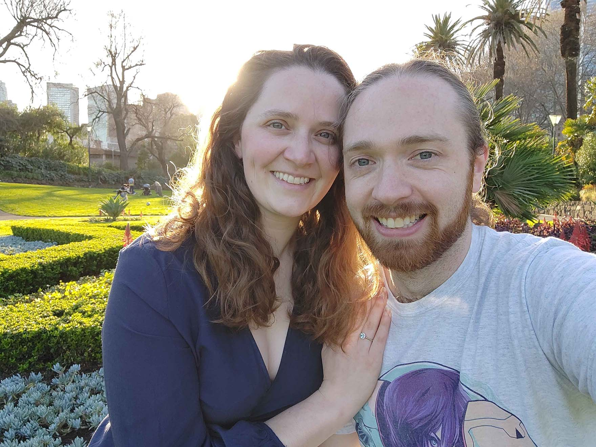

OUR STORY
When Megan Met Adam
- 
-
We met on Bumble and had our first date at Aberdeen Café in Macleod. This was followed by a second date at Crown Arcade and then a third, a picnic in the Botanical Gardens. Conversation from the start was easy, but we were keen for more dates when the topics of our conversations became deeper and more personal. Three months later Adam suggested a trip to Sydney and Canberra. Those early days involved a lot of sharing favourite movies and TV shows (notably 'Your Name' and 'Hornblower'), and going for walks.
We planned a Japan trip for early 2020, but the world had other plans. During COVID we were grateful to have each other and became closer still. Out of lockdowns, trips to Castlemaine, Lorne and Warrnambool were highlights, as were weekends playing video games and board games and enjoying one another’s company. In 2022 we had to forgo international travel, but we spent a week together in Queensland. We moved in together just before Christmas in 2022 (would not recommend that time of year for moving).
In 2023 we finally got to do our big trip to Japan. Beyond the natural beauty of the country, our shared fascination with Japanese culture, including a love of Japan’s anime and video games, meant the making of many treasured memories. Back at home we settled into routines, seeing both our families regularly – time which we cherish dearly – and taking up ballroom dancing together. Towards the end of 2023 Archie, otherwise known as Archie boy, Archibald, Archius, ‘chunka wunka’ and ‘no stop that’, joined our family. We love each other and the life that we have together: whether that’s time with our wonderful friends, going out to museum exhibitions and interactive art installations, doing quiet hobbies together (like cross-stitching, miniature painting or lego building) or snuggling on the couch and watching a story unfold. We’re excited for this next chapter and celebrating with you all!
M & A
10.07.2025